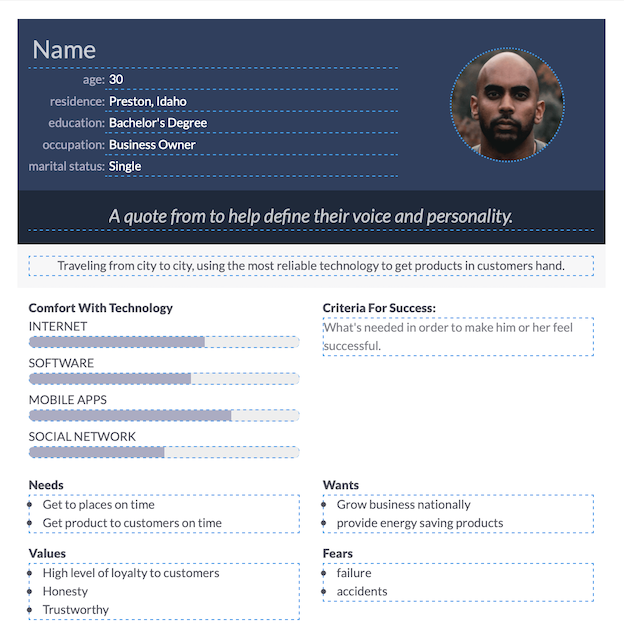
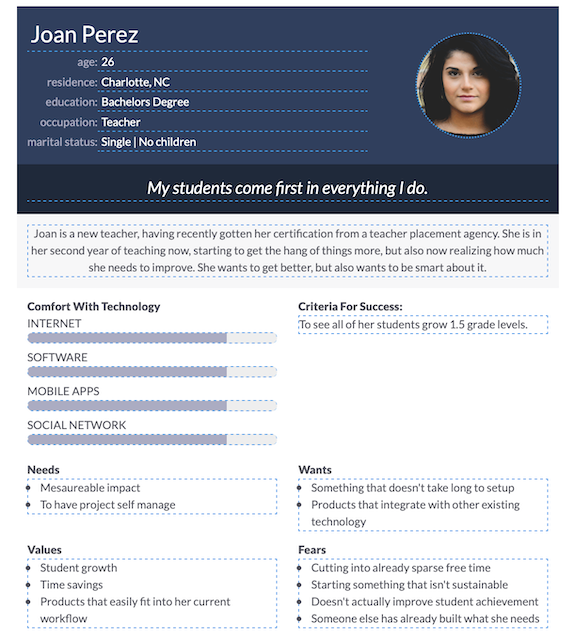

We are providing a description of a target audience male and female from different perpectives of skill level and wants and needs,
to provide some insite as to what would people benefit from having a site like this one. In these personas, we will take in consideration the scenarios and accomodate different ideas to provide a great user experience.
Both personas are busy business people that want to make good use of their time, and products that are easy to use.
Personas:


Scenarios:
Scenario 1:
Is this site available in an app for convinience when I travel?
Scenario 2:
I am going to bike the entire day, will it give me an update of the weather througout the day?
Scenario 3:
Will the app work if I loose service, is there an offline mode?